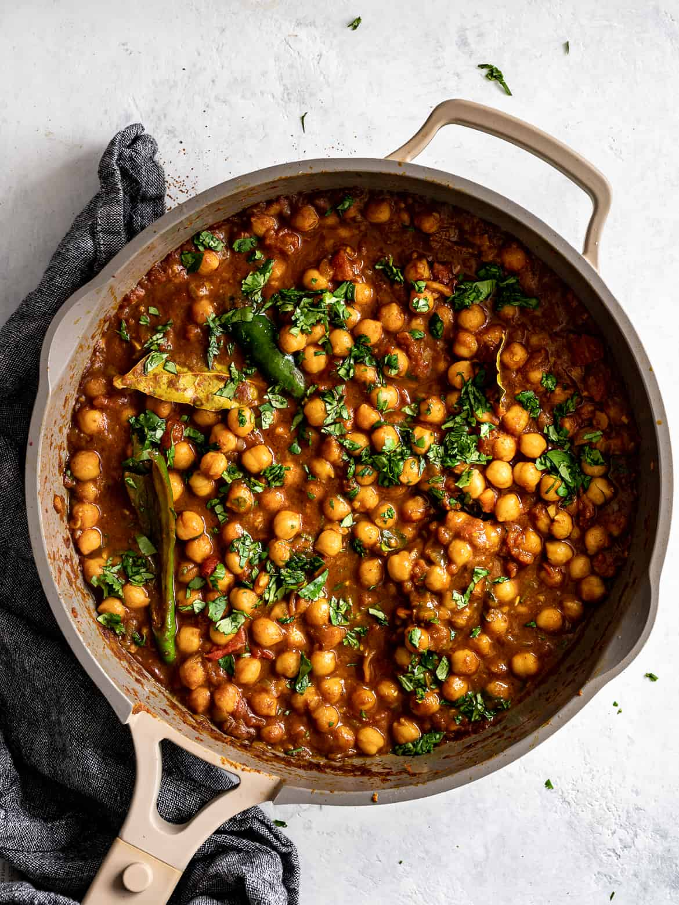

Chana Masala

Ingredients
- 2 tablespoons coconut oil, or ghee or any neutral oil, such as avocado
- 1 teaspoon cumin seeds
- 2 medium onions finely chopped
- 1/8 teaspoon baking soda
- 4 garlic cloves, minced
- 1 - inch piece of ginger, peeled and minced
- 1-2 spicy green chili seeded and finely chopped, or sliced in half lengthwise (optional)
- 2 teaspoons ground coriander
- 1 teaspoon ground cumin
- 1-2 teaspoons paprika
- 1 teaspoon ground turmeric
- 1 tablespoon chana masala powder
- 1 bay leaf (if your bay leaves are older, use two)
- 2 teaspoons garam masala, divided
- 2 medium tomatoes finely chopped, or 1 15-oz can chopped tomatoes
- 2 14-ounce cans chickpeas drained and rinsed well, or 4 cups cooked from dry chickpeas
- 1 1/2 tsp kosher salt
- 1 tablespoon lemon juice or more to taste
- 1/2 bunch fresh cilantro leaves, finely chopped
Directions
- Heat the oil in a large, heavy-based pan over a medium heat. When hot, add the cumin seeds and cook until fragrant, about 1 minute. Stir in the onion and add the baking soda, if using. Cook the onions, stirring often, until very soft and golden brown, about 5 minutes.
- Reduce the heat to medium-low and add the garlic, ginger, spicy chili (if using), ground coriander, ground cumin, paprika, turmeric, chana masala powder, bay leaf, and 1 teaspoon garam masala. Stir until the mixture is very fragrant and starts to darken, about 1 minute.
- Stir in the chopped tomatoes and simmer until they break down and thicken slightly, about 5 minutes.
- Add the chickpeas, salt, and 1/2 cup water. Bring back up to a bubbling simmer then lower the heat slightly and cook for 10 to 15 minutes, or until the sauce has thickened to desired consistency. If the mixture is too thin, use a fork to mash a few of the chickpeas. If too thick, add a 1/2 cup more water.
- Stir in the remaining teaspoon of garam masala and the lemon juice. Serve warm garnished with fresh chopped cilantro.